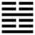

Thuần Chấn (震 zhèn)
Vạc là một đồ dùng quan trọng trong nhà, làm chủ giữ nó, không ai bằng con trai trưởng, cho nên sau quẻ Ðỉnh tới quẻ Chấn. Chấn là sấm mà cũng là trưởng nam.
Thoán từ:
震, 亨．震來虩虩, 笑言啞啞．震驚百里, 不喪匕鬯．
Chấn hanh. Chấn lai hích hích, tiểu ngôn ách ách.
Chấn kính bách lý, bất táng chuỷ xướng.
Dịch: Sấm động thì hanh thông. Lúc sấm nổ ầm ầm mà nớp nớp lo sợ thì sau sẽ cười nói ha ha. Sấm động trăm dặm mà không mất muỗng và rượu nghệ (đồ tế thần)
Giảng: Sấm phát động thì vạn vật mới nảy nở, cho nên bảo là hanh thông.
Khi có điều gì kinh động mà nớp nớp lo sợ, giữ gìn sửa mình thì không bị tai hoạ mà sau sẽ được vui vẻ. Sấm vang động xa đến trăm dặm, mà tinh thần vẫn vững, không đến nỗi đánh mất đồ tế thần (cái muỗng và rượu làm bằng lúa mạch hoà với nghệ) thế là tốt, hanh thông. Nói đến việc tế thần là để diễn cái ý: giữ được tôn miếu, xã tắc.
Ý nghĩa các hào:
1.
初九: 震來虩虩, 後笑言啞啞, 吉．
Sơ cửu: chấn lai hích hích, hậu tiếu ngôn ách ách, cát.
Dịch: Hào này ở đầu thời sấm động. Hào từ y hệt Thoán từ, chỉ thêm hai chữ “hậu” (sau) và “cát” tốt.
2.
六二: 震來, 厲．億喪貝, 躋于九陵, 勿逐七日得．
Lục nhị: Chấn lai, lệ; ức táng bối, tê vu cửu lăng, vật trục, thất nhật đắc.
Dịch: Hào 2, âm: Sấm nổ, có cơ nguy, e mất của chẳng (sợ hãi) chạy lên chín từng gò để tránh; dù mất của những đừng đuổi theo, bảy ngày sẽ được.
Giảng: Hào này âm nhu lại cưỡi lên hào 1 dương cương, nhút nhát, sợ 1 áp bức, e có cơ nguy, lại ngại mất của, nên phải tránh xa (lên chín tầng gò); nhưng nó vốn trung, chính, khéo xử nên đừng quá lo mà khiếp sợ, cứ bình tĩnh, dù có mất tiền, sau cũng lấy lại được.
3.
六三: 震蘇蘇, 震行无眚．
Lục tam: Chấn tô tô, chấn hành vô sảnh.
Dịch: Sấm động mà sinh thác loạn; cứ tránh đi, bỏ điều bất chính thì không bị hoạ.
Giảng: Hào âm, ở vị dương, là hạng người bất chính, nên lo sợ tới thác loạn; nếu trở về đường chính thì không bị tai hoạ.
4.
九四: 震, 遂泥．
Cửu tứ: chấn, toại nê.
Dịch: Hào 4, dương: sấm động, bi say mê chìm đắm.
Giảng: Hào dương này, bất trung, bất chính, mà lại bị hãm vào giữa bốn hào âm, hai ở trên, hai ở dưới, nên gặp việc chấn động, lo sợ, không tự thoát được, chỉ chìm đắm thôi.
5.
六五: 震往來, 厲．意无喪, 有事．
Lục ngũ: Chấn vãng lai, lệ; ức vô táng, hữu sự.
Dịch: Hào 5, âm: Sấm tới hay lui cũng đều thấy nguy; cứ lo (ức) sao cho khỏi mất đức trung (vô táng), thì làm được công việc.
Giảng: Hào âm, hay lo sợ, chỉ thấy toàn là nguy, nhưng ở vị 5, có đức trung; cứ giữ đức đó thì sấm tới hay lui (vãng lai cũng có thể hiểu là hào 5 này tới hay lui) cũng không sao mà còn làm được công việc nữa.
6.
上六: 震索索, 視矍矍, 征凶．震不于其躬, 于其鄰, 无咎, 婚媾有言．
Thượng lục: Chấn tác tác, thị quắc quắc, chinh hung.
Chấn bất vu kì cung, vu kì lân, vô cữu, hôn cấu hữu ngôn.
Dịch: Hào trên cùng: Sấm động mà kinh hoảng, mắt nhớn nhác, nếu đi tới (hành động) thì xấu. Nếu đề phòng trước từ khi sự chấn động chưa tới bản thân mình, mới tới hàng xóm, thì không lầm lỗi, mặc dầu bà con có kẻ chê cười mình.
Giảng: Hào này âm nhu, gặp hoàn cảnh cực kỳ chấn động (vì ở trên cùng quẻ Chấn) cho nên có vẻ quá sợ sệt, mà không có tài nên không nên hành động gì cả, chỉ nên đề phòng trước thôi. Bốn chữ: “hôn cấu hữu ngôn” Chu Hi hiểu là nói về việc gả cưới, không khỏi có lời ngờ vực; các sách khác đều hiểu là bị bà con (hôn cấu) chê cười. Tại sao lại chê cười? Tại hào này nhút nhát: Tại không dám hành động chăng?